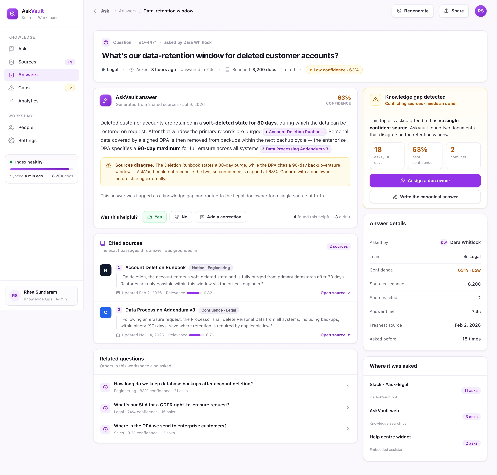

Connect
Point AskVault at Notion, Confluence, Zendesk and Drive. It indexes 8,200 documents across 14 connectors and keeps them in sync.
AskVault answers employee questions in plain language from your wikis, docs and tickets — each response grounded in cited passages, scored for confidence, with the knowledge gaps it can't answer surfaced for you to fix.
Every team's knowledge is scattered across four or five tools that nobody searches the same way twice. AskVault indexes them all and answers from what it finds — never from thin air.
No keyword guessing, no ten open tabs. AskVault reads the question, retrieves the passages that matter, and answers with each claim linked to its source.
Employees can carry over up to 5 unused PTO days into 2026; anything above that is forfeited on Jan 31 1 PTO Policy. Managers can approve a one-time 3-day exception in Workday 2 Handbook §4.2.
AskVault closes the loop from scattered documents to an answer an employee can trust — and flags what it couldn't answer so the knowledge base actually improves.
Point AskVault at Notion, Confluence, Zendesk and Drive. It indexes 8,200 documents across 14 connectors and keeps them in sync.
Each question retrieves the most relevant passages, and the model answers strictly from what it found — with a confidence score attached.
Answers arrive with inline citations. Questions it can't answer confidently become tracked knowledge gaps, routed to a doc owner.
BuildspaceLabs built the MVP front end: a workspace Knowledge dashboard and a single-answer detail view with its cited sources.
A prominent ask bar with a live cited answer sits above the numbers that matter — deflection, volume, answer time — and a feed of every recent question with its confidence and sources.

Open any answer to see the full response with inline citations, the exact passages it was grounded in, a "was this helpful?" row — and, when sources disagree, a knowledge-gap flag routed to an owner.

Search, grounded answers, citations, gap detection and analytics consolidated into one surface — no more pinging colleagues for a doc link.
Ask in plain English and get an instant answer — no keyword archaeology across five tools.
Every claim links to the exact passage it came from — grounded answers, not confident guesses.
Frequently asked questions with no confident source surface as ranked gaps to fix.
Track how many questions are self-served, by team, over time — with volume and answer speed.
Notion, Confluence, Zendesk, Drive and more — indexed continuously and kept fresh.
Every answer carries a confidence score, and low-confidence responses are flagged for review.
An internal assistant that invents policy is worse than no assistant at all. AskVault answers only from your indexed documents and shows the passage behind every line.
SSO is available on the Business and Enterprise plans; the Starter plan supports email and Google login only 1. Starter customers can upgrade in-app to enable SAML SSO 2.
Delivered as a production-quality MVP in a nine-week engagement.
We build AI-native products like AskVault. Tell us where your team's knowledge lives and we'll show you what a grounded, cited internal-search assistant looks like on your own content.